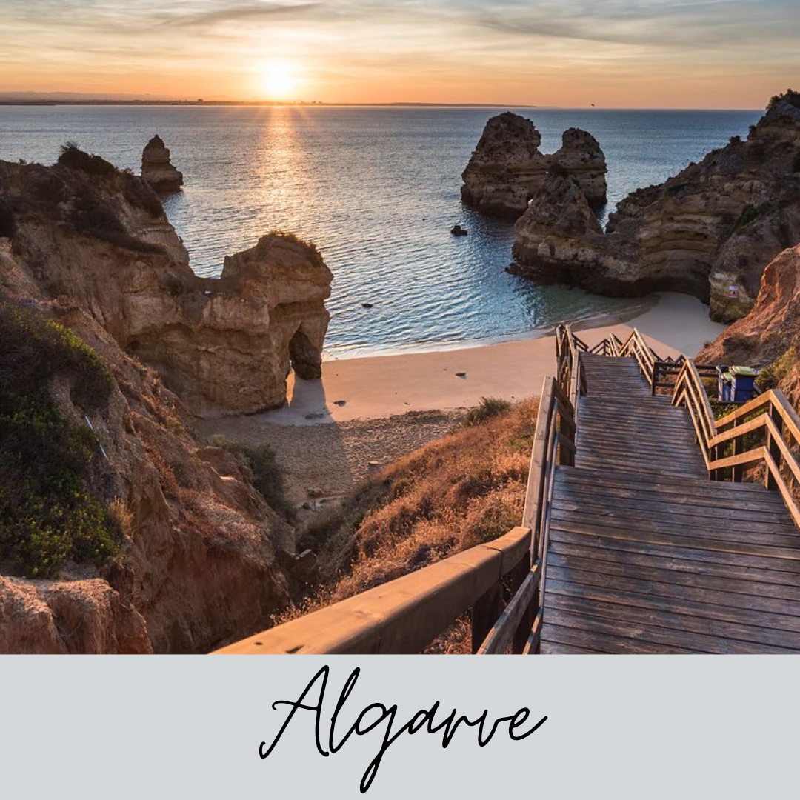
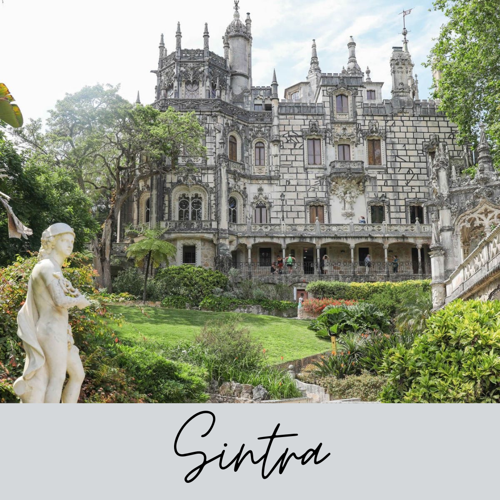

Descubra os destinos mais incríveis de Portugal.
|  | O Algarve, no sul de Portugal, é uma região conhecida por suas praias douradas, falésias impressionantes e clima agradável. Com vilas pitorescas, cidades históricas e uma rica herança cultural, oferece uma experiência encantadora. Além das paisagens costeiras, destaca-se por esportes aquáticos, campos de golfe e uma culinária deliciosa. Um destino que combina beleza natural e uma atmosfera acolhedora. |  | Sintra, cidade nas colinas perto de Lisboa, Portugal, é famosa por seus palácios deslumbrantes, como o Palácio da Pena. Com uma paisagem romântica, ruas encantadoras e o famoso Travesseiro de Sintra, é um destino imperdível para quem busca beleza e charme histórico. |

|
Braga, no norte de Portugal, é uma cidade encantadora que combina história, tradição e vitalidade contemporânea. Conhecida como "Cidade dos Arcebispos", Braga possui uma rica herança religiosa, evidenciada por magníficas igrejas e catedrais, como o Santuário do Bom Jesus do Monte. Além disso, o centro histórico revela ruas de paralelepípedos, praças animadas e uma atmosfera acolhedora. Braga é também um importante centro cultural, com eventos e festivais ao longo do ano. Com uma mistura única de patrimônio e modernidade, Braga oferece uma experiência memorável aos visitantes. |

|
As Ilhas Berlengas, perto de Peniche, Portugal, formam um arquipélago com destaque para Berlenga Grande. Com falésias dramáticas, cavernas marinhas e uma reserva natural rica em flora e fauna, a ilha abriga a Fortaleza de São João Baptista do século XVII. É um destino popular para atividades como mergulho e observação de aves, oferecendo uma fuga única e tranquila para os amantes da natureza. |